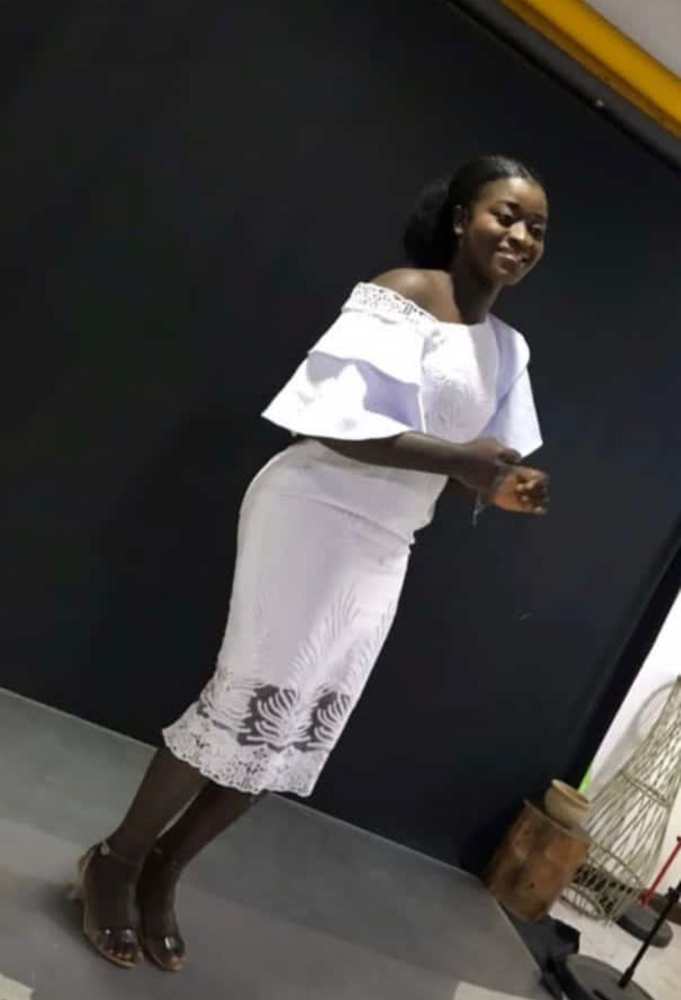
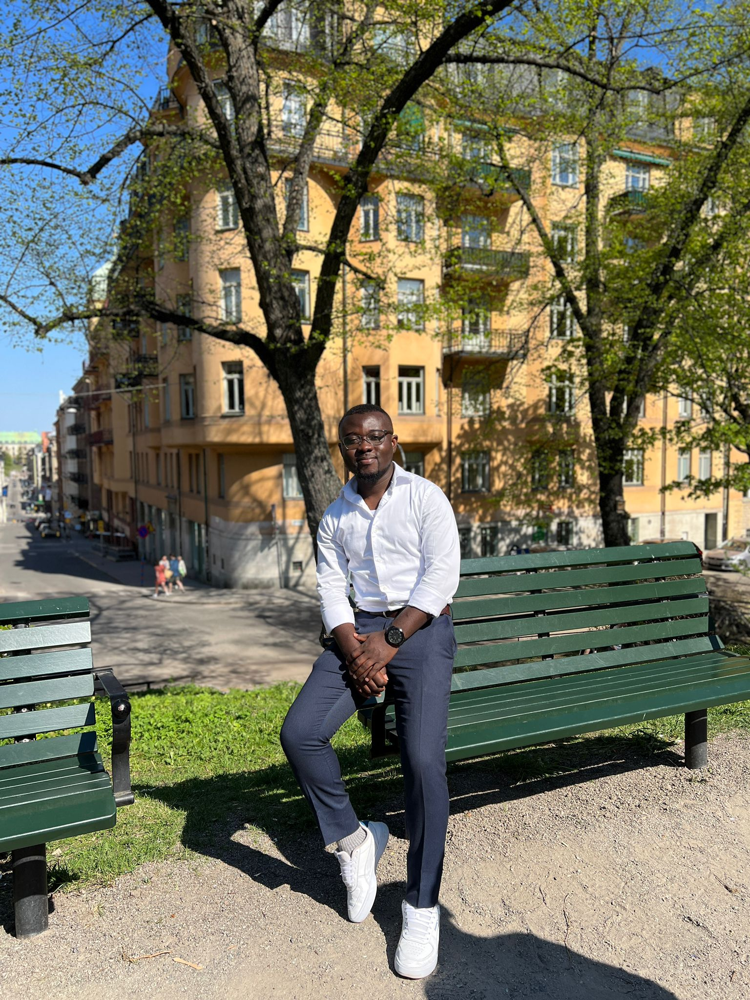

The Bride
A nurse by profession and a worshipper by calling, Bernice is 4th born of Mr. and Mrs. Osae who are natives of Akropong Akuapem and Mampong Appiakrom in the Eastern Region and Ashanti region of Ghana respectively.
The Groom
Adrian is The second born son of Mr. and Mrs. Sasu, natives of Asuom in the Kwaebibrim District of Easter Region. He is an auditor by profession and a minister of God by calling.
I have found the one whom my soul loves
A thin paint will stick to a thick paint. The shadows are just like the highlights, but we're going in the opposite direction. When you do it your way you can go anywhere you choose.
A thin paint will stick to a thick paint. The shadows are just like the highlights, but we're going in the opposite direction. When you do it your way you can go anywhere you choose.
A thin paint will stick to a thick paint. The shadows are just like the highlights, but we're going in the opposite direction. When you do it your way you can go anywhere you choose.